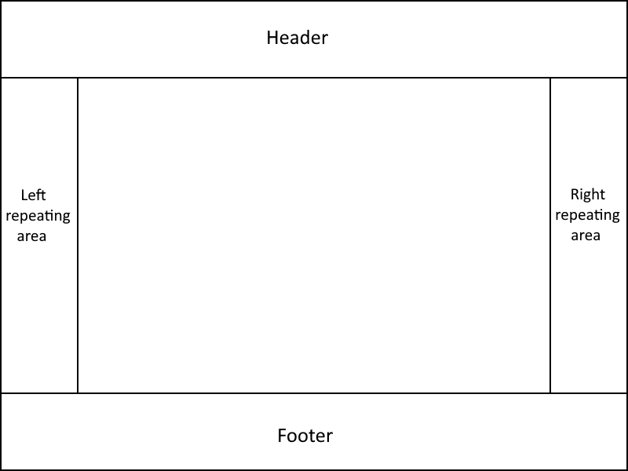
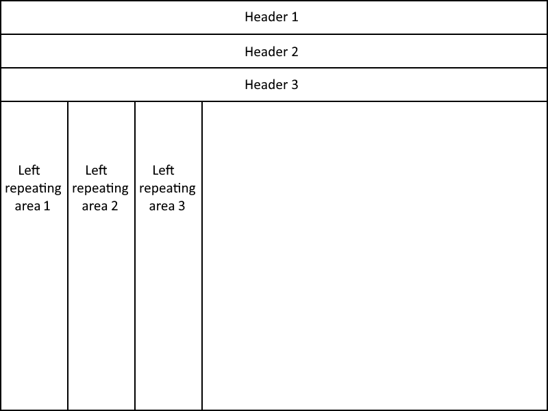

Adding Repeating Area
Brief
The article describes how to add and configure repeating areas.
Details
A repeating area is a container with content that repeats on both odd and even pages of a section, or on the section's odd or even pages.
A repeating area is a box of specified width or height located in a certain position on a page.
The position of a repeating area can be either predefined or specified by coordinates:
The following types of repeating areas have a predefined position:
Headers are located at the top margin of the section.
Footers are located at the bottom margin of the section.
Left and right repeating areas are located at the left and right margins of the section.
A repeating area can be specified by coordinates on a page as the distance from the left and top margins of the section.
A repeating area can include any content elements, such as paragraphs, tables, images, and lines.
The elements can be added to the area using the corresponding methods, for example AddParagraph and AddParagraphToRepeatingArea.
The elements must fit in the repeating area box.
For details about adding and configuring content elements, see the corresponding articles.
Repeating areas can be added to a section for both the odd and even pages and for the odd and even pages separately,
by using the corresponding methods of SectionBuilder.
You can add several repeating areas to a section, but they should not overlap.
When several repeating areas are added, the following rules apply:
The priority of headers, footers and left and right repeating areas in a section is configured by the
SectionBuilder.SetRepeatingAreaPriority method.
By default, headers and footers take a priority over left and right repeating areas, that is, the height of the left and right repeating areas
is reduced by the height of headers and footers:

When adding several repeating areas with the predefined position of the same type, for example, footers,
they will stack on to each other in the order they were added to the section without any space between them.
For example, several headers and several left repeating areas look as follows:

Repeating Areas and Document Flow Areas
The layout of pages in a section is defined by repeating areas and document flow area.
There are few rules that apply when combining repeating areas and a document flow area.
If you add a repeating area by specifying its coordinates, it is then necessary to specify the coordinates of the document flow area.
If the coordinates of the document flow area are specified for the same pages as the repeating areas (both odd and even, odd, or even),
it is also necessary to make sure that the repeating areas do not overlap it.
If you add a repeating area with a predefined position and the coordinates of the document flow area are not specified,
the section content will occupy the entire remaining space of the page.
Note that if you need to create a document with only repeating areas and without a document flow area, for a correct generation
of the document, you should call the SectionBuilder.SetMargins(0) method.
If you do not specify formatting settings for a repeating area, they will have their default values defined by the default style.
You can apply a style to an entire repeating area using the method ApplyStyle and
set styles for all content elements of the same type on the repeating area level by using the methods
SetParagraphStyle,
SetTableStyle,
SetImageStyle,
SetLineStyle,
SetListStyle.
For more on working with styles, see the article Formatting and Styles.
See also
Adding Section
Adding Document Flow Area
Formatting and Styles
Examples
Example 1. Add a header with an image and add a footer with a custom text and a page number on each page Show
Example 1. Add a header with an image and add a footer with a custom text and a page number on each page Hide
var pathImage = Path.Combine(
Environment.CurrentDirectory, "Images", "PDF.png");
var styleMain = StyleBuilder.New().SetFontSize(11);
//Create a document:
DocumentBuilder.New()
.AddSection().ApplyStyle(styleMain)
.SetSize(PaperSize.A5)
.SetOrientation(PageOrientation.Portrait)
.AddHeaderToBothPages(30)
.AddParagraph()
.SetFont(Fonts.Courier(11))
.SetAlignment(HorizontalAlignment.Center)
.AddInlineImage(pathImage, 24, 24)
.SetMarginRight(5).SetMarginTop(5).ToParagraph()
.AddText("GS PDF Library")
.ToSection()
.AddParagraphToSection("This document is an example of a PDF document:" +
"A5 paper size, portrait orientation, a header with an image, " +
"a footer with a line and a page number, an empty page at the end.")
.InsertPageBreak()
.AddFooterToBothPages(20)
.AddLineToRepeatingArea()
.AddParagraph("A footer with custom text, ")
.AddPageNumberToParagraph("page #")
.SetAlignment(HorizontalAlignment.Center)
//Build a file:
.ToDocument().Build("Result.pdf");
The above code will generate the following:
 See the document
See the document
Example 2. Add a footer for each page and different right and left repeating areas for odd and even pages (the code doesn't include texts) Show
Example 2. Add a footer for each page and different right and left repeating areas for odd and even pages (the code doesn't include texts) Hide
var pathQRcode = Path.Combine(
Environment.CurrentDirectory, "Content", "Images", "qrcode.png");
var styleMain = StyleBuilder.New()
.SetFontSize(14);
//Create a document:
var document = DocumentBuilder.New();
var section = document.AddSection().ApplyStyle(styleMain)
.SetRepeatingAreaPriority(RepeatingAreaPriority.Vertical)
.SetSize(PaperSize.A5).SetOrientation(PageOrientation.Portrait)
.SetMargins(40)
.AddRptAreaRightToOddPage(70)
.AddParagraph("page #")
.SetBackColor(Color.Gray).SetAlignment(HorizontalAlignment.Center)
.AddPageNumber().ToSection()
.AddRptAreaLeftToEvenPage(70)
.AddImage(pathQRcode, ScalingMode.Stretch).SetMarginRight(10)
.ToSection()
.AddParagraphToSection("This document is an example of a PDF " +
"document: A5 paper size, portrait " +
"orientation, a left footer on odd pages with " +
"page number and width 50, a right footer " +
"on even pages with QR code and width 50, " +
"a footer with custom text and a line to show " +
"that left and right footers have priority over " +
"horizontal footer.")
.AddLine().SetMarginTop(50).ToSection();
for (int n = 0; n < arrQuestions.Length; n++)
AddQA(section, arrQuestions[n], arrAnswers[n]);
section.AddFooterToBothPages(40)
.AddLineToRepeatingArea()
.AddParagraph("This a footer set for each page of this section.")
.SetFontSize(12).SetFontColor(Color.Blue);
//Build a file:
document.Build("Result.pdf");
//Method:
void AddQA(SectionBuilder docFlow,
string question, string answer)
{
docFlow.AddParagraph(question).SetMarginTop(30).SetMarginBottom(30)
.SetBold();
docFlow.AddParagraph(answer);
}
After including the corresponding texts, the above code will generate the following:
 See the document
See the document
Example 2. Add a footer for each page and different right and left repeating areas for odd and even pages (full version) Show
Example 2. Add a footer for each page and different right and left repeating areas for odd and even pages (full version) Hide
public static void CreateExample2()
{
var pathQRcode = Path.Combine(
Environment.CurrentDirectory, "Content", "Images", "qrcode.png");
var styleMain = StyleBuilder.New()
.SetFontSize(14);
string[] arrQuestions = new string[]
{
Example2q1,
Example2q2,
Example2q3,
Example2q4,
Example2q5,
Example2q6
};
string[] arrAnswers = new string[]
{
Example2a1,
Example2a2,
Example2a3,
Example2a4,
Example2a5,
Example2a6
};
//Create a document:
var document = DocumentBuilder.New();
var section = document.AddSection().ApplyStyle(styleMain)
.SetRepeatingAreaPriority(RepeatingAreaPriority.Vertical)
.SetSize(PaperSize.A5).SetOrientation(PageOrientation.Portrait)
.SetMargins(40)
.AddRptAreaRightToOddPage(70)
.AddParagraph("page #")
.SetBackColor(Color.Gray).SetAlignment(HorizontalAlignment.Center)
.AddPageNumber().ToSection()
.AddRptAreaLeftToEvenPage(70)
.AddImage(pathQRcode, ScalingMode.Stretch).SetMarginRight(10)
.ToSection()
.AddParagraphToSection("This document is an example of a PDF " +
"document: A5 paper size, portrait " +
"orientation, a left footer on odd pages with " +
"page number and width 50, a right footer " +
"on even pages with QR code and width 50, " +
"a footer with custom text and a line to show " +
"that left and right footers have priority over " +
"horizontal footer.")
.AddLine().SetMarginTop(50).ToSection();
for (int n = 0; n < arrQuestions.Length; n++)
AddQA(section, arrQuestions[n], arrAnswers[n]);
section.AddFooterToBothPages(40)
.AddLineToRepeatingArea()
.AddParagraph("This a footer set for each page of this section.")
.SetFontSize(12).SetFontColor(Color.Blue);
//Build a file:
document.Build("Result.pdf");
//Add texts to the document:
void AddQA(SectionBuilder docFlow,
string question, string answer)
{
docFlow.AddParagraph(question).SetMarginTop(30).SetMarginBottom(30)
.SetBold();
docFlow.AddParagraph(answer);
}
}
private static string Example2q1 = "What differs GS PDFFlow Library from any other PDF generation library out there?";
private static string Example2a1 = "Any library that is available on the market right now would be a direct competitor to Haru we base GS PDFFlow Library on. " +
"Don't think of GS PDFFlow as a library to just create a document. It is rather a page making API that you can use in your application. " +
"We provide a big chunk of functionality that you would expect in applications like Adobe InDesign minus the user interface. " +
"This approach takes a load off of developer's shoulders allowing them to concentrate solely on the business needs. " +
"It improves code readability and supportability, decreases the chances of defects or other mistakes, saves time and money - " +
"all when working with PDF documents.";
private static string Example2q2 = "This sounds complicated. Do I really need GS PDFFlow Library if I only need to create printable version of an invoice in my application?";
private static string Example2a2 = "GS PDFFlow Library is not a complicated tool. It is versatile, but removes a lot of costs that are normally associated with PDF development. " +
"For example, since the library takes care of the content layout, TOC, pagination, even book spread tables, you do not need deep and thorough knowledge of PDF technology. " +
"This reduces the learning curve as you are working with objects (for example, tables or images) that are easy to understand. " +
"Additionally, since the use of the library reduces the amount of code and potential errors, in the long run it is efficient even for small tasks.";
private static string Example2q3 = "Can I read and/or change an existing PDF document?";
private static string Example2a3 = "No, we do not provide functionality to work with existing PDF. The sole purpose of GS PDFFlow Library is to offer an easy way to create simple and complex " +
"PDF documents when you need to provide a printable version for your needs or the needs of your end-users.";
private static string Example2q4 = "Do you provide mobile platforms support?";
private static string Example2a4 = "Yes, GS PDFFlow Library can be used for mobile platform applications as well. Contact us with any inquiries about mobile platform builds.";
private static string Example2q5 = "Can I use GS PDFFlow library in commercial applications?";
private static string Example2a5 = "Yes, GS PDFFlow Library is available for purchase for commercial use. We offer both: volume based licenses and per server licenses. " +
"Also, we are always open to discuss the licensing that works best for your. Contact us today to get more information on pricing!";
private static string Example2q6 = "Do I need a commercial license for Dev or QA Server?";
private static string Example2a6 = "No, we strongly believe in affordability. You only need to pay for the production server for your internal usage or external application. " +
"You can use free license for development and QA needs.";
The above code will generate the following:
See the document
Example 3. Create a document consisting only of repeating areas: a footer on each page and left and right repeating areas on odd and even pages Show
Example 3. Create a document consisting only of repeating areas: a footer on each page and left and right repeating areas on odd and even pages Hide
var pathImage = Path.Combine(
Environment.CurrentDirectory, "Content", "Images", "logo.png");
var styleMain = StyleBuilder.New()
.SetFontSize(14)
.SetMarginLeft(40)
.SetMarginTop(20)
.SetMarginRight(40);
var styleLine = StyleBuilder.New(styleMain)
.SetMargin(Inherit.Parent)
.SetMarginTop(50);
//Create a document:
var document = DocumentBuilder.New();
var section = document.AddSection().SetSize(PaperSize.A5).SetMargins(0);
section.AddRptAreaRightToOddPage(295).ApplyStyle(styleMain)
.AddImageToRepeatingArea(pathImage)
.AddParagraph("Many developers have the same need: a tool to create documents " +
"for printing or sending to their users in a PDF format. The solutions " +
"currently available on the market have one common drawback - they " +
"provide only a low-level functionality to create PDF documents.");
AddNote(section.AddRptAreaLeftToOddPage(295));
AddNote(section.AddRptAreaRightToEvenPage(295));
AddNote(section.AddRptAreaLeftToEvenPage(295));
section.AddEmptyPage().AddEmptyPage()
.AddFooterToBothPages(20)
.AddLineToRepeatingArea()
.AddParagraph()
.AddTabulation(150, TabulationType.Center)
.AddTabulation(450, TabulationType.Center)
.AddTabSymbol()
.AddTextToParagraph("additional information on the website")
.AddTabSymbol()
.AddUrlToParagraph("https://gehtsoftusa.com/products/gs-pdf-library/");
//Build a file:
document.Build("Result.pdf");
//Add lines for notes:
void AddNote(RepeatingAreaBuilder area)
{
area.ApplyStyle(styleMain).SetLineStyle(styleLine)
.AddParagraph("Notes").SetAlignment(HorizontalAlignment.Center);
for (int i = 0; i < 6; i++)
area.AddLineToRepeatingArea();
}
The above code will generate the following:
 See the document
See the document
back